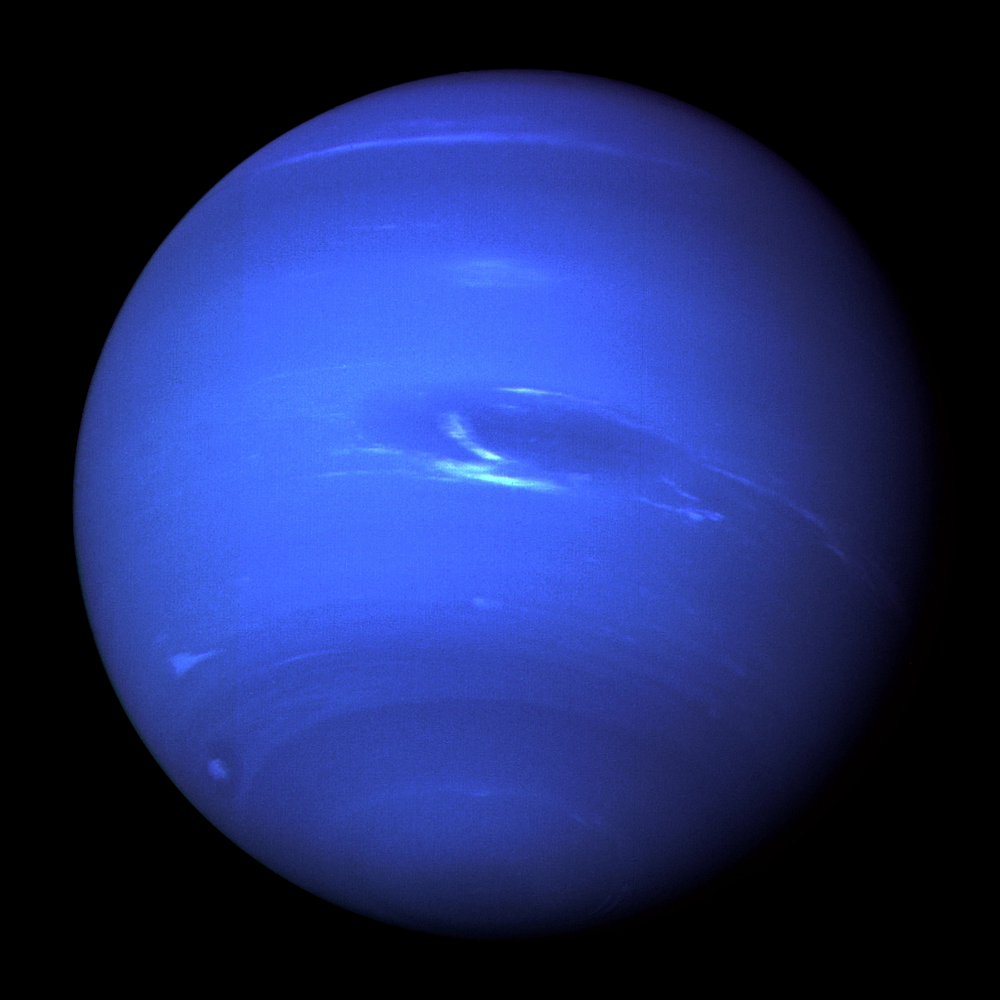

Planet Terluar Tata Surya
Neptunus adalah planet kedelapan dan paling jauh dari Matahari di Tata Surya. Diklasifikasikan sebagai planet Ice Giant (Raksasa Es), Neptunus memiliki warna biru tua yang sangat pekat akibat kandungan gas metana di atmosfernya yang menyerap cahaya merah. Planet ini terkenal sebagai tempat dengan angin paling kencang di seluruh Tata Surya, mencapai kecepatan supersonik melebihi 2.100 km/jam. Neptunus juga memancarkan energi panas internal 2,6 kali lebih banyak daripada yang diterimanya dari Matahari, mendorong dinamika iklim yang sangat aktif seperti badai raksasa Great Dark Spot.